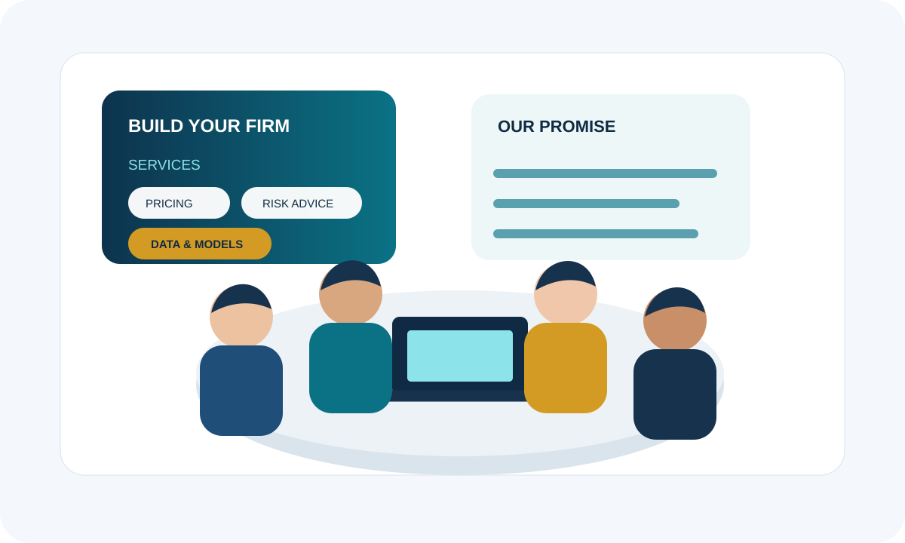

M1 · SESSION 1 · GROUP ACTIVITY
Build the Ideal Actuarial Firm
Work in a team of 3 or 4 students. Imagine that you are founding a new actuarial consultancy. Your goal is to build a firm that is useful, credible, ethical and easy to explain to a potential client.

BEFORE YOU START
Set up your team
- Make a team of 3 or 4.
- Use one device for the whole group. One student controls the screen; everyone must take part in every decision.
- Speak English throughout the activity. Use the language support on the page whenever you need it.
- Choose a temporary project manager. Their job is to keep the group moving, not to make all the decisions.
IDENTITY
Name your firm
Choose a professional name and write one short sentence that explains what your firm wants to achieve.
SERVICES
Choose what your firm does
Select exactly three services. Be ready to explain why they belong together.
CLIENT
Choose your first major client
Select one client. Discuss what they are worried about and what an actuary could do for them.
TEAM
Design the team
Assign one responsibility to each student. If you are a group of 3, combine two roles.
VALUES
Decide what makes your firm worth trusting
Select three values. For each one, prepare a concrete example of what it would look like in practice.
FINAL DELIVERABLE
Prepare your pitch
Your presentation should make the class understand both what actuaries do and why your firm would be useful.
3-person group? Combine Students 3 and 4. Each student still speaks for approximately 2 minutes.